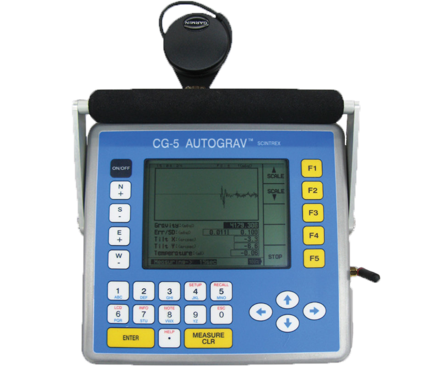

Tecnología
Nuestra Tecnología
En Geophysical Studies Chile, nos enfocamos en la innovación y excelencia, contando con profesionales de amplia experiencia. Utilizamos equipamiento de última generación y tecnología de punta para obtener datos precisos y eficientes con un enfoque multidisciplinario. A continuación, algunos de los servicios que ofrecemos:

ABEM Terrameter LS-2
Medidor de resistividad eléctrica del subsuelo
GEOtiny
Sismometro digital de banda ancha
SIUI Smartor
Detector de fallas ultrasónico
ABEM Terraloc PRO 2
Sismógrafo

CG - 5 Autograv
Medidor de gravedad

Phoenix MTU-5C
Equipo de medición magnetotelúrica
MTC - 100 Series
equipo de medición magnetotelúrica
Receptor IP
GRx8-32, Modelo GRx2
Sistema electromagnético transitorio
ABEM WalkTEM 2
magnetómetro de protones sobrealimentado
GEM GSM-19
Receptor GNSS
GPS CHCNAV I50
Perfilador de Subsuelo Marino
EdgeTech SB-216S